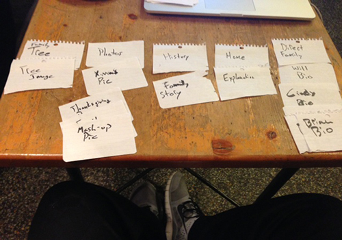

Final Project Card Sort
My Explanation
I created my cards for my family tree website, which I have chosen to be my final project. I think my family would really enjoy seeing it. My uncle began the process of going back and finding some old information. I hope to incorporate that into the site in the future, but I do not have that information readily available. I Created cards for my content I intend to put in the site.
I don’t know whether my site was to simplistic or if the way to display the information is just obvious, but the 3 other people I grabbed to sort, gave me back the exact Card Sort that I did, for that reason you will only see one image of a card sort. I did not record the other’s in photographs if they were identical to mine, and they all turned out to be..
I think my content is just very simplistic, I think what I took from this is I can add more as I build my final project.tead of repeating the results of all the card sorts, I have them in images down below.
My Sort
